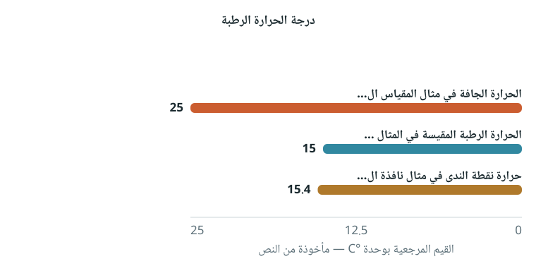

درجة الحرارة الرطبة
Wet-Bulb Temperature
درجة الحرارة الرطبة هي أدنى حرارة يبلغها الهواء غير المشبع بتبخّر الماء فيه، وتُقاس بميزان حرارة بُلبته ملفوفة بقماش مبلل يمرّ عليه الهواء.
درجة الحرارة الرطبة هي الحرارة التي يقرؤها ميزان حرارة بُلبته مغطاة بقماش مبلل يمرّ عليه الهواء. يشرح تشينغل وبولز أن الطريقة العملية لمعرفة رطوبة الهواء هي ميزان حرارة بُلبته مغطاة بقطن مشبع بالماء مع مرور هواء عليه، وأن الحرارة المقيسة بهذه الطريقة تسمى درجة الحرارة الرطبة وتُستخدم في تطبيقات التكييف. ويوضح المصدر أن المبدأ شبيه بمبدأ التشبع الأدياباتي: حين يمرّ هواء غير مشبع على القماش المبلل يتبخر بعض الماء، فيأخذ حرارة التبخّر من الهواء والقماش فتنخفض حرارته. ويقرر المصدر نفسه أن حرارة التشبع الأدياباتي ودرجة الحرارة الرطبة ليستا متساويتين في العموم، لكنهما تتقاربان في مخاليط الهواء وبخار الماء عند الضغط الجوي. ولذلك تُستخدم درجة الحرارة الرطبة بديلًا عن حرارة التشبع الأدياباتي في حساب الرطوبة النوعية.
كيف تعمل الظاهرة؟
الآلية أن الهواء غير المشبع يمرّ على سطح ماء فيتبخر منه بخار. التبخّر يحتاج حرارة كامنة يأخذها من الماء ومن الهواء الملامس، فتنخفض حرارة السطح المبلل. ويستمر الانخفاض حتى يبلغ السطح حرارة يتساوى عندها معدل الحرارة المسحوبة بالتبخّر مع معدل الحرارة الواصلة إليه من الهواء الأدفأ. الحرارة التي يثبت عندها هذا التوازن هي درجة الحرارة الرطبة، وهي لذلك حدّ أدنى لا ينزل تحته الهواء بتبخّر الماء فيه.
العلاقة بالأرقام
يعرض تشينغل مثالًا عند 1 atm (101.325 kPa) بحرارة جافة 25 °C وحرارة رطبة 15 °C مقيسة بمقياس رطب دوّار، ويطلب منه الرطوبة النوعية والرطوبة النسبية والإنثالبي. ويقرر أن حرارة التشبع الأدياباتي تقع عمومًا بين حرارة الدخول وحرارة نقطة الندى، وأنها تتقارب مع الحرارة الرطبة في مخاليط الهواء وبخار الماء عند الضغط الجوي. وفي مثال آخر عند 20 °C ورطوبة نسبية 75% تكون حرارة نقطة الندى 15.4 °C.
مفاهيم متقاربة
التمييز بين الحرارة الرطبة وحرارة التشبع الأدياباتي هو الأدق والأكثر إساءةً للفهم: المصدر يقرر صراحةً أنهما ليستا متساويتين في العموم، ثم يبيّن أنهما تتقاربان في حالة الهواء وبخار الماء عند الضغط الجوي، ولهذا يُسمح باستخدام الحرارة الرطبة مكان حرارة التشبع الأدياباتي في معادلة الرطوبة النوعية. والتمييز الثاني عن الحرارة الجافة: الجافة خاصية الهواء نفسه، والرطبة خاصية توازن بين الهواء والماء، فالفارق بينهما يقيس جفاف الهواء. والتمييز الثالث عن نقطة الندى: الندى حرارة تكاثف عند ضغط بخار ثابت، والرطبة حرارة توازن تبخّر.
حدود التطبيق
الحد الأول أن التقارب بين الحرارة الرطبة وحرارة التشبع الأدياباتي مشروط بمخاليط الهواء وبخار الماء وعند الضغط الجوي، ولا يُعمم على مخاليط أخرى ولا على ضغوط بعيدة. والثاني أن القياس بالمقياس الرطب يتأثر بسرعة الهواء على القماش وبسلامة القماش من التلوث والجفاف، فقراءة غير مستقرة تعطي حرارة رطبة خاطئة. والثالث أن الحرارة الرطبة تصف حالة الهواء لا حالة الماء المتبخر: تبريد الهواء بالتبخّر يسير على خط حرارة رطبة ثابتة تقريبًا، لكن المصدر ينبّه إلى أن ذلك لا ينطبق تمامًا إذا كان الماء المورّد بحرارة مختلفة عن حرارة الهواء الخارج.

| الكمية | القيمة | المصدر |
|---|---|---|
| الحرارة الجافة في مثال المقياس الرطب الدوّار | 25 °C | [1] |
| الحرارة الرطبة المقيسة في المثال نفسه | 15 °C | [1] |
| الضغط الجوي المرجعي في المثال | 101.325 kPa | [1] |
| حرارة نقطة الندى في مثال نافذة الغرفة | 15.4 °C | [1] |
المصادر
- 1 Thermodynamics: An Engineering Approach, 8th ed. — McGraw-Hill Education (2015). · اطُّلع عليه 2026-11-28
- 2 2021 ASHRAE Handbook—Fundamentals, Chapter 1: Psychrometrics — ASHRAE (American Society of Heating, Refrigerating and Air-Conditioning Engineers) (2021). www.ashrae.org/technical-resources/publications-library/ashrae-handbook/description-2021-ashrae-handbook-fundamentals · اطُّلع عليه 2026-11-28
استشهد بهذا المصطلح
الصيغتان مبنيتان من بيانات الصفحة نفسها: العنوان والتاريخ ورابط النسخة المنشورة.
درجة الحرارة الرطبة — Wet-Bulb Temperature. (2026). ديوان المعرفة — انفراد. https://infiradev.com/diwan/terms/term-wet-bulb-temperature.html
@misc{term-wet-bulb-temperature2026,
title = {درجة الحرارة الرطبة},
titleaddon = {Wet-Bulb Temperature},
howpublished = {{ديوان المعرفة — انفراد} — مرجع علمي عربي},
year = {2026},
url = {https://infiradev.com/diwan/terms/term-wet-bulb-temperature.html},
urldate = {2026-11-28},
note = {مراجعة علمية: Abdullah Al-Huwaidi}
}
راجعه: Abdullah Al-Huwaidi · 2026-11-28 · آخر تحديث 2026-11-28